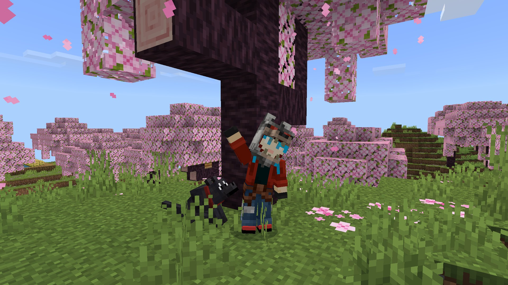

My Minecraft World
Posted on

As a past time of mine, I enjoy playing minecraft. Recently, I created a new peaceful world where I searched for a Cherry Blossom Biome. I was lucky to find one with a huge village right next to it. It was there when I decided to build my base overlooking the village surrounded by the beautiful cherry blossom trees.
So far I've collected an assortment of pets such as dogs from different biomes and the village cats. I also picked up a hores that just so happened to be naturally fast. I have gone on a few mining adventures and found enough diamond to make a full set of diamond armor and diamond tools. Additionally, I found a trial chamber while strip mining, entered the nether, traded with piglins and found a bastion remnant. The last thing I did was find two strongholds under villages about 2000 blocks away from my base.